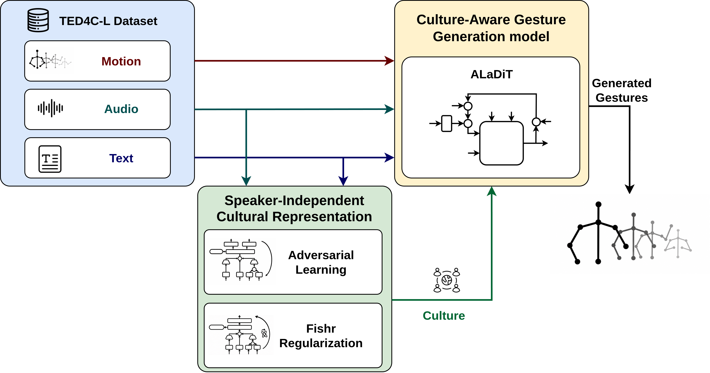

Build TED4C-L
Each five-second sample pairs 3D upper-body motion with audio, prosody, text embeddings, culture, and speaker identity.
Accepted at ECCV 2026
SICAGE learns cultural cues that carry across speakers and uses them to generate co-speech gestures from audio and text.
Ariel Gjaci · Antonio Sgorbissa · Vittorio Murino
People from the same culture do not gesture in exactly the same way. When the same speakers appear in training and test data, a model can seem culture-aware simply because it recognizes their individual style.
SICAGE prevents that shortcut by keeping speakers disjoint across splits and treating each speaker as a domain. Fishr or adversarial training learns culture-relevant cues from audio and text that transfer to unseen speakers. ALaDiT then uses those cues, together with the speech context and a short motion seed, to generate synchronized upper-body gestures.
The dataset pipeline, culture encoder, and motion generator can each be replaced or studied separately.

Each five-second sample pairs 3D upper-body motion with audio, prosody, text embeddings, culture, and speaker identity.
Fishr or adversarial training keeps the audio/text representation useful for culture prediction while reducing speaker-specific shortcuts.
A 50-step diffusion model aligns motion with low-level audio and high-level text/culture context in under 14 ms.
Mean ± standard deviation over 10 matched speaker-disjoint test runs. Lower FGD is better; all other metrics are higher-is-better.
FGD for ALaDiT/FI
CE F1 for ALaDiT/FI
for four seconds of motion
| Model | FGD ↓ | Diversity ↑ | CE F1 ↑ | BAS ↑ | SRGR ↑ |
|---|---|---|---|---|---|
| ALaDiT / NC | 1.60 ± .18 | 109.50 ± .68 | 43.41 ± 1.10 | 22.51 ± .15 | 67.72 ± .23 |
| best balance ALaDiT / FI | 1.03 ± .15 | 110.27 ± .70 | 44.61 ± .95 | 22.63 ± .22 | 68.09 ± .25 |
| ALaDiT / ADV | 1.53 ± .17 | 111.75 ± .71 | 42.71 ± .95 | 22.45 ± .17 | 67.57 ± .27 |
What the controls show
Giving ALaDiT only a culture label does not reproduce the Fishr result: FGD is 1.63 with OneHot and 1.03 with FI. The same model reaches 1.56 when its audio/text encoder is trained without speaker regularization. Alignment matters too—removing it raises FGD to 1.36—but it does not explain the whole improvement. Adding alignment to DSG+ lowers FGD from 4.89 to 2.52, still above ALaDiT/FI.
Each 25-second clip compares real motion, no-culture ALaDiT, adversarial culture embeddings, and Fishr embeddings.
TED4C-L contains 106.45 hours from 764 speakers across India, Italy, Japan, and Turkey. The public release provides numeric motion, audio, and text representations with fixed speaker-independent splits.
Explore the datasetThe README covers the full data pipeline, the main models, and the OneHot, NoDG, NoAlign, and DSG+/FI+Align controls.
Accepted at ECCV 2026.
@inproceedings{gjaci2026sicage,
author = {Gjaci, Ariel and Sgorbissa, Antonio and Murino, Vittorio},
title = {SICAGE: Speaker-Independent Culture-Aware
Gesture Generation using TED4C-L Dataset},
booktitle = {European Conference on Computer Vision (ECCV)},
year = {2026}
}